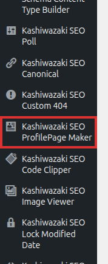
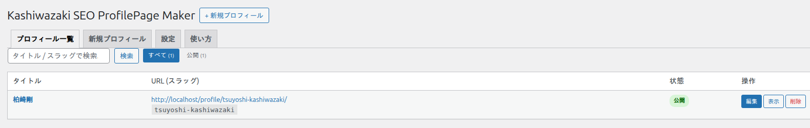

インストール・初期設定
プラグインのインストールから最初のプロフィール作成まで、ステップバイステップで解説します。
インストール方法
1
プラグインをアップロード
プラグインフォルダ wp-plugin-kashiwazaki-seo-profilepage-maker を /wp-content/plugins/ にアップロードします。
2
プラグインを有効化
WordPress 管理画面の「プラグイン」一覧から Kashiwazaki SEO ProfilePage Maker を有効化します。有効化時に URL ルーティング (リライトルール) が自動登録されます。
3
メニューを確認
左メニューに Kashiwazaki SEO ProfilePage Maker が追加されます。ここからプロフィールの作成・管理を行います。

有効化後にプロフィールページが 404 になる場合は、WordPress 管理画面の「設定 → パーマリンク」を一度開いて保存し、リライトルールを再生成してください。
管理画面の構成
メニューを開くと、以下の 4 つのタブで構成された管理画面が表示されます。
- プロフィール一覧 — 作成済みプロフィールの一覧。状態 (公開 / 下書き / 非公開 / レビュー待ち) や URL を確認し、編集・表示・削除ができます。
- 新規プロフィール — 新しいプロフィールを作成する入力フォーム。
- 設定 — JSON-LD の出力、URL プレフィックス、表示順プリセットなどプラグイン全体の設定 (この画面のみ管理者権限が必要)。
- 使い方 — ショートコードや URL の仕組みなどの簡易ヘルプ。

最初のプロフィールを作成する
1
「新規プロフィール」タブを開きます。
2
「基本情報」タブで氏名・肩書・自己紹介などを入力します。必須項目は氏名です。
3
必要に応じて他のタブ (経歴・著作・論文など) を入力し、ページ下部の保存ボタンで公開します。
入力フォームの詳しい使い方は「プロフィールの作成・編集」を参照してください。